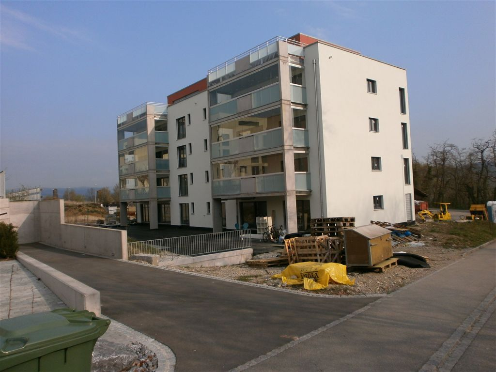
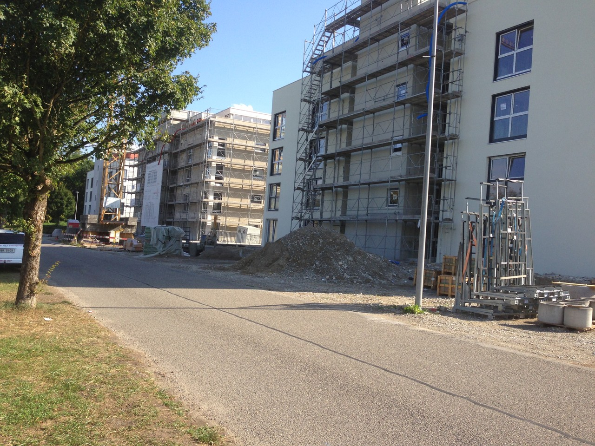

GIPSER / MALER / FASSADENISOLATIONVILLIGEN AG
Oberflächen
machen Räume.
Lantii GmbH verbindet Gipser- und Malerarbeiten mit Fassadenisolation.
Leistungen ansehen ↘Arbeitsfelder
Von innen nach aussen.
Malerarbeiten
Fassadenisolation
Einblicke
Gebäude und Fassaden.
Einblicke in unterschiedliche Bauphasen.


Kontakt
Sprechen wir über Ihr Vorhaben.
Lantii GmbH
Villigen AG
056 245 79 39